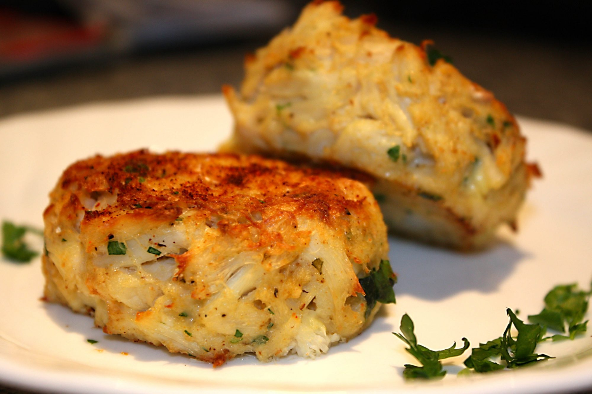

Maryland Crab Cakes

Description
Maryland is famous for its crab cakes! After you've tried this recipe, you'll know why./p>
Cook: 20 mins - Total: 35 mins - Prep: 15 mins - Servings: 4 - Yield: 4 to 6 servings
Ingredients
- 1 pound crab meat, shredded
- 1½ tablespoons dry bread crumbs
- 2 teaspoons chopped fresh parsley
- salt and pepper to taste
- 1 egg
- 1½ tablespoons mayonnaise
- ½ teaspoon ground dry mustard
- 1 dash hot pepper sauce
Nutrition Facts
Per Serving: 211 calories; protein 20.1g; carbohydrates 2.6g; fat 13g; cholesterol 184.8mg; sodium 372.6mg.
Directions
- Preheat oven broiler.
- Mix together crab meat, bread crumbs, parsley, salt and pepper.
- Beat together egg, mayonnaise, hot sauce and mustard. Combine with other ingredients and mix well. Form into patties and place on a lightly greased broiler pan or baking sheet.
- Broil for 10 to 15 minutes, until lightly brown.
return